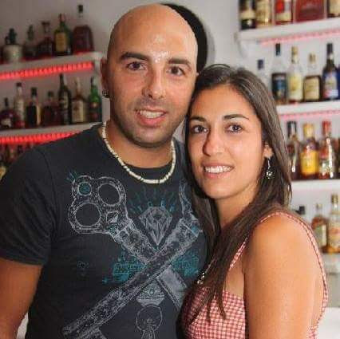

Soy un desarrollador apasionado con formación en Desarrollo de Aplicaciones Web, especializado en tecnologías como React, .NET Framework y Python. Mi experiencia profesional incluye seis meses de trabajo en un entorno colaborativo, donde adquirí valiosas habilidades técnicas y fortalecí mi capacidad de comunicación y trabajo en equipo, utilizando herramientas como Git, DevOps y Figma. Además, soy padre de familia, lo que me inspira a mantener el equilibrio entre creatividad y responsabilidad.
Biografía
"Estudié Desarrollo de aplicaciones web en el centro FP.Txurdinaga, donde descubrí mi pasión por crear aplicaciones funcionales que faciliten la vida de las personas."
Actualmente, sigo perfeccionando mis habilidades con un curso de Python y FastAPI, acumulando más de 50 horas de formación adicional. Lo que más me define es mi entusiasmo por los retos, mi actitud proactiva y mi pasión por resolver problemas de manera creativa, siempre enfocado en el éxito colectivo.
Mi camino hacia el desarrollo tecnológico es una historia de reinvención. Después de casi dos décadas en otro sector, superé una enfermedad que me llevó a replantearme mis metas profesionales y personales. Este desafío me inspiró a adentrarme en el mundo del desarrollo de software, una decisión que refleja mi compromiso con el aprendizaje continuo y mi capacidad de adaptarme a los cambios.
Creo firmemente en el poder de la tecnología para transformar vidas y estoy emocionado por la oportunidad de seguir creciendo y contribuyendo en el ámbito tecnológico.